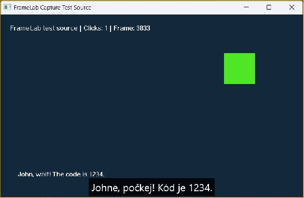

FRAME/LAB · WINDOWS · PREVIEW.19
Od stažení po vícejazyčné titulky.
Skutečný průchod Windows: od rozbalení ZIPu přes obraz, zvuk a OCR až po nahrávání a debug. Klikni na obrázek pro zvětšení.
Stáhni a rozbal celý ZIP
Ve Windows 10/11 x64 klikni na stažený ZIP pravým tlačítkem → Extrahovat vše. Vyber krátkou zapisovatelnou cestu, třeba D:/FrameLab, a počkej na dokončení. Nespouštěj program uvnitř ZIPu.
Potřebuješ ovladač NVIDIA GPU; pro živý obraz také ovladač střihovky. Python, kompilátor ani SDK neinstaluješ. Při chybě 0x80010135 zvol kratší cestu.
Co máš vidět: Celá složka s app, deps, docs, tools, licenses a spouštěči.
- 1 Pravé tlačítko na ZIP
- 2 Extrahovat vše
- 1 Krátká cílová cesta
- 2 Potvrdit rozbalení
Spusť aplikaci a ukázku
Spusť Start FrameLab.cmd nebo 1 - Spustit FrameLab.cmd. Čerstvá instalace pustí GTA ukázku; další starty obnoví relaci. Přepínač EN / CZ je vpravo nahoře.
V kartě Capture / Vstup můžeš kdykoliv pustit GTA 720p / 30 FPS, CS:GO 1080p nebo test EN → CZ. K těmto ukázkám nepotřebuješ střihovku. Na snímcích tohoto návodu běží skutečný klip, případně označené umělé OCR video.
Co máš vidět: Obraz vlevo, nastavení vpravo. Další karty odkryjí malé šipky vedle názvů karet.
Připoj střihovku
Zdroj HDMI → vstup střihovky → USB/PCIe do PC. Zavři jiné aplikace používající kartu. V Capture vyber zařízení, rozlišení a FPS zvlášť a stiskni Start capture. 4K i jiné poměry stran závisí na režimech ovladače.
Delivered frames ukazuje rozměry skutečně přijímaných snímků. HDMI timing toto API nehlásí. 60 FPS přenos může obsahovat opakované snímky 30 FPS hry. Test 30 FPS je umělý zdroj. Při No Signal ověř kabel, zdroj a obsazení karty.
Co máš vidět: Živý vstup nahradí ukázku. HDR není implementované.
- 1 Zdroj
- 2 Rozlišení a FPS zvlášť
- 3 Spustit vstup
Otevři vlastní video nebo MKV
Capture → Open video… otevře výběr souboru. Přehrávač nabízí pauzu, posun a smyčku. Kodeky LibVLC jsou v kompletním balíku; systémové VLC není potřeba.
Obsahuje-li soubor více audií či titulky, po načtení vyber příslušnou stopu. Vypni vložené titulky, pokud je nechceš v obrazu. OCR čte viditelný text; nepřekládá přímo textovou stopu ani řeč. Chráněné streamingové soubory nejsou podporované.
Co máš vidět: Název souboru a jeho nativní rozměry. Chybějící nabídka stop může znamenat, že je soubor nemá.
- 1 Vybrat soubor
- 2 Přehrávání a smyčka
Začni na frame genu 2×
V Frame gen zvol RIFE 4.22 lite / DirectML, D3D11 Optical Flow nebo NVIDIA VFG. Začni s 2×. RIFE na RTX 4050 zkus Low; na zde testovaném Intel UHD začni Optical Flow. Modely RIFE jsou v ZIPu.
RIFE potřebuje vhodnou DirectX 12 GPU, Optical Flow Direct3D 11. AMD a starší GeForce nebyly fyzicky otestované. VFG zůstává pro RTX 40/50; NR má samostatná omezení. Tabulka GPU a měření →
Co máš vidět: Stav aktivního backendu a nenulový čítač generovaných snímků při pohybu.
- 1 Volba backendu
- 2 Zapnutí a kvalita
- 3 Násobič snímků
Volitelně doplň enhancer
FG a OCR fungují bez tohoto kroku. NR je komunitní experiment s externími soubory. Zavři FrameLab a spusť 4 - Doplnit enhancer.cmd. Průvodce odkáže na přesný balík a zkontroluje import.
Stáhni Veyra-2.1.9-NVIDIA-win64-portable.zip, nech jej zabalený a vyber druhým tlačítkem průvodce. Nevybírej AMD, Virtual Camera ani Source code. Přesné odkazy, podmínky a opravy chyb →
Co máš vidět: Průvodce potvrdí připravené soubory. Pak aplikaci znovu spusť.
- 1 Přesný externí download
- 2 Vybrat stažený ZIP
- 1 Import dokončen
Enhancer, porovnání a úsporné Eco
NR je na nepodporovaném hardwaru blokované. AMD, Intel a GTX tímto krokem nezískají DLSS. Externí NR DLL nejsou v ZIPu ani na zrcadle.
V AI / NR zapni enhancer. Pro začátek zkus 720p / 1 pass. F6 efekt vypíná, F7 přepíná porovnání, F8 zmrazí stejný pár. Síla mění výsledné prolnutí; nižší síla sama nešetří výpočet AI.
Eco: enhance before frame gen přesune NR před FG. Při 30 → 60 FPS může NR počítat přibližně 30 místo 60 obrazů za sekundu. Může přidat latenci, spotřebuje více VRAM a změní artefakty. Je volitelné a výchozí stav je vypnutý.
Snížení AI limitu nebo počtu průchodů šetří výkon v obou režimech. Původní rozměry výstupu zůstávají. Naměřené výsledky a omezení Eco →
Co máš vidět: Stav AI a počet vyhodnocení za sekundu. Změna obrazu nemusí být zlepšení; porovnej stejnou scénu.
- 1 Zapnutí a Eco
- 2 Počet průchodů
- 3 Limit zpracování
Vyber jazyky, OCR a překladový model
V Titulky zvol jazyk v obraze a cílový jazyk. RapidOCR / PP-OCRv5 multilingual je přibalené se všemi 12 sadami. Pro EN → CS funguje hned OPUS-MT / CPU; volitelné CUNI Q3/Q5/Q8 zůstávají pro stejný pár.
Pro jiné jazyky zvol TranslateGemma 4B Q4_K_M, klikni Stáhnout / pokračovat a ověřit a počkej. Pak zapni Překládat titulky. Q4 má 2,49 GB; první GPU runtime navíc 1,62 GB. Q8 a 12B jsou větší neotestované volby. Paměť, jazyky a omezení →
Co máš vidět: Připravený model a nový titulek ve zvoleném jazyce. První načtení může trvat desítky sekund. Malá Gemma chybuje, zejména v češtině.
- 1 Jazyk v obraze a jazyk překladu
- 2 Lokální model
- 3 Výpočet překladu
- 1 Volba modelu
- 2 Stažení a ověření
Označ jedno slovo a čtecí oblast
Počkej na dobře čitelný anglický titulek. Klikni Select subtitle word + reading area…. V náhledu myší obtáhni jedno celé slovo.
Pak zvol Adjust reading area a vymez pás, kam se vejdou i delší titulky na více řádcích. Vynech minimapu, SPZ a chat. Slovo určuje přibližnou barvu a výšku písmen, není hledaným slovem ani názvem fontu. Potvrď Use this style.
Co máš vidět: Modrý vzorek a větší žlutá oblast. Přehrávání na pozadí běží dál.
- 1 Vybrat slovo a oblast
- 2 Znovu otevřít inspektor
- 1 Jedno čitelné slovo
- 2 Oblast pro všechny řádky
- 3 Změnit oblast čtení
Ověř, co OCR skutečně přijalo
OCR inspector / saved sample… znovu otevře uložený vzorek. Rozbal Recognized text / measured values / reasons.
Vidíš přečtený text, barvu, výšku a důvod odmítnutí. Zeleně jsou přijaté řádky; oranžově například text mimo čtecí oblast. Když mizí správné titulky, vyber čistší slovo nebo uprav tolerance v Appearance details. Stejně vypadající nápis uvnitř oblasti stále může projít.
Co máš vidět: Na této umělé ukázce byla přijata věta a odmítnuta časomíra mimo oblast.
- 1 Barva a výška písmen
- 2 Odmítnutý text mimo oblast
- 3 Přijatý dialog
Ulož profil pro hru nebo video
V Subtitle appearance klikni Save as…, zadej název a stiskni Save profile. Příště jej vybereš ze seznamu. Save changes aktualizuje vybraný profil; Save as vytvoří nový.
Ukládá se styl i čtecí oblast. Výběr přežije restart aplikace. Pro jiné rozlišení nebo výrazně jiný styl titulků profil zkontroluj.
Co máš vidět: V rozbalovacím seznamu je tvůj název.
- 1 Výběr uložených profilů
- 2 Název a uložení
Dej překladu čas a nastav polohu
Minimum on screen počítá čas až od zobrazení češtiny. Keep while waiting podrží předchozí titulek během dalšího překladu. Join split sentences zkouší spojit pokračující větu; vypni jej, pokud spojuje nesouvisející dialog.
Níže nastav velikost, polohu a ukotvení českého textu nebo povol Drag Czech overlay in preview a přesuň jej myší. Víceřádkový text je vystředěný a omezený viditelným obrazem. Zelený OCR rámeček označuje čtení originálu, ne polohu češtiny.
Co máš vidět: Překlad zůstává čitelný; zpoždění překladu ale není odstraněné.
- 1 Spojování vět
- 2 Minimum a čekání
- 1 Velikost textu
- 2 Umístění a zarovnání
- 3 Přetáhnout překryv myší
Vyber monitor a měřítko
Display → Fit zachová celý obraz, Fill a příliš velké 1:1 mohou oříznout okraje. Vyber monitor. Rozlišení a obnovovací frekvenci monitoru nastavuješ ve Windows, ne zde.
Výsledný obraz jde na výstup GPU tohoto PC. Passthrough střihovky úpravy FrameLabu neobsahuje. F11 zobrazí čistý hlavní obraz, Escape/F11 vrátí ovládání.
Co máš vidět: Správný monitor a zachovaný poměr stran.
- 1 Měřítko a monitor
- 2 Celá obrazovka
Vyber zvukový výstup
Šipkou vpravo vedle karet najdi Audio. Vyber výstup Windows, hlasitost a případně ztlumení. Zvuk videa a capture mají vlastní ovládání.
Ne každý klip obsahuje zvuk. U filmu s více audii vyber jazykovou stopu v přehrávači. FG a NR přidávají zpoždění obrazu; čítač APP není měření synchronizace A/V.
Co máš vidět: Zvuk jde do zvoleného zařízení, pokud zdroj obsahuje audio.
- 1 Výstupní zařízení
- 2 Hlasitost a ztlumení
Nahraj 15 sekund pro porovnání
V Recording → Choose folder… vyber disk s místem. Pro 1440p se všemi stupni počítej prakticky alespoň s 36 GiB volného místa. Klikni Record 15 s analysis a počkej i na následný export klipů.
Uloží se RAW, generované snímky, párované před/po enhanceru, finální obraz s českými titulky, SRT, časování a JSON s nastavením a ID. Nahrávají se zapnuté efekty, klipy jsou bez zvuku. Nedokončené záznamy jsou označené. Formát a limity →
Co máš vidět: Dokončený export ve Clips folder. Během záznamu neměň pipeline.
- 1 Nahrát 15 sekund
- 2 Cíl a volné místo
Čti FPS a odezvu správně
Stats rozlišuje vstupní snímky, odhad měnícího se obsahu, odeslané obrazy a ID potvrzená Windows. Pomlčky znamenají nedostupné měření, ne nulu. Potvrzená ID mohou být dolní odhad.
APP / callback → Present měří čas uvnitř aplikace. Nezahrnuje střihovku, fyzický monitor ani ovladač. Vytížení GPU je pro celou kartu, tedy i ostatní programy. Krátký screenshot neprokazuje dlouhodobě stabilní FPS.
Co máš vidět: Grafy a jasně označené rozsahy měření.
- 1 Potvrzená ID od Windows
- 2 Latence aplikace
- 3 Celá GPU
Zapni debug a textové logování
Šipkou vedle karet otevři Debug & measurement. Zvol dobu, případně Frame-by-frame timing a Include OCR and translated text. Klikni Start debug recording nebo F9.
Until stopped zapisuje do složky až do Stop/F9 nebo ukončení programu. Pokud aplikaci zavřeš se zapnutým logováním, běžný další start jej obnoví. Log obsahuje časová razítka, nastavení, CPU/GPU, FPS, fronty, OCR a překlady podle voleb. Obrázky ani zvuk nenahrává a nic automaticky neposílá. Před sdílením zkontroluj soukromý text.
Co máš vidět: Roste čas a velikost logu. Open debug folder otevře soubory; Stop ukončí zápis.
- 1 Malé statistiky ve fullscreenu
- 2 Zahrnout OCR a překlady
- 3 Start / Stop / F9
Malé statistiky při hraní
V Debug zapni Fullscreen FPS + latency nebo stiskni F10. Potom F11 otevře čistý výstup. Vpravo nahoře zůstane nenápadné FPS, APP a P95.
F10 statistiku skryje. Ovládání, porovnání i čtecí rámeček OCR se ve fullscreenu skryjí; přeložené titulky zůstávají. Statistika se nevypaluje do analytických klipů.
Co máš vidět: Čistý obraz a volitelný malý přehled; Escape vrátí nastavení.
- 1 Volitelný přehled F10
Okno hry, Remote Play a pouze titulky
Vstup → Okno aplikace: obnov seznam a vyber hru. Pro samotné titulky zapni průhledný překryv přes zdrojové okno. Nastav OCR oblast a zvlášť pozici překladu. Místní modely zůstávají; placené API je volitelné s vlastním klíčem.
Úplný návod s reálnými obrázky a připojením konzolí →

Co máš vidět: Překlad nad hrou, s kliknutím procházejícím do hry.
Zvol výpočet a GPU překladače
Titulky → Local / offline → CUNI nebo Gemma → Výpočet překladu. Automatika zde použije NVIDIA CUDA; pro jiné vhodné GPU je Vulkan, případně CPU / RAM. GPU pro překlad se volí nezávisle na GPU pro obraz. Změna model vypne; znovu zapni překlad.
Paměť, možnosti a naměřené časy →

Co máš vidět: Stav ukáže skutečný backend a načtení do paměti.